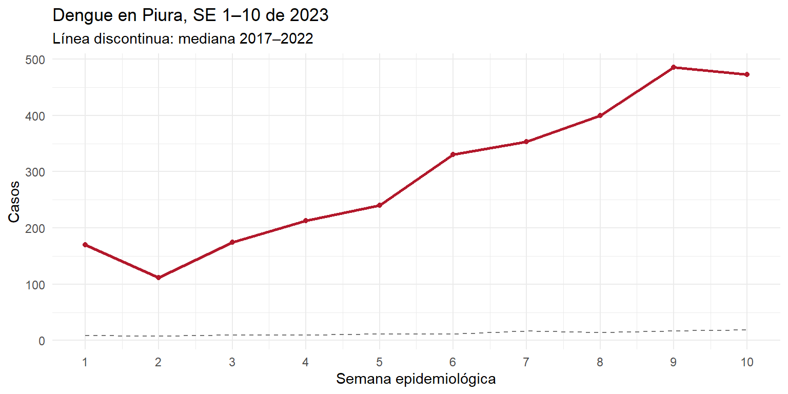

# Si falta algún paquete:
# install.packages(c("readr", "dplyr", "tidyr", "ggplot2"))
library(readr)
library(dplyr)
library(tidyr)
library(ggplot2)
url_datos <- "https://raw.githubusercontent.com/kemava/inteligencia-sanitaria/main/datos/procesados/dengue_piura_semanal.csv"
dengue <- read_csv(url_datos, show_col_types = FALSE)Práctica 1: ¿justificaban los datos una alerta por dengue en Piura?
Sesión 1 · Taller
Pregunta
Es la primera semana de marzo de 2023. El director regional de salud de Piura le pregunta a su equipo si la situación del dengue justifica emitir una alerta e intensificar las acciones de control. Ustedes tienen los datos de notificación hasta la semana epidemiológica (SE) 10.
¿Los datos de las semanas 1 a 10 de 2023 justificaban una alerta?
Objetivos
Al terminar la práctica podrán:
- Leer una base desde un enlace y revisar su estructura.
- Construir una serie semanal con ceros explícitos.
- Comparar un año con una referencia histórica y discutir cómo la elección de los años de referencia cambia la lectura.
- Renderizar un documento Quarto.
Datos
La base dengue_piura_semanal.csv contiene las notificaciones de dengue de Piura (NotiSP) agregadas por año, semana epidemiológica de inicio de síntomas, distrito, clasificación clínica y tipo de diagnóstico. Va de 2010 a la SE 35 de 2026. No contiene registros individuales.
| Variable | Descripción |
|---|---|
ano |
Año epidemiológico |
semana |
Semana epidemiológica (1–53) |
ubigeo |
Código del distrito (6 dígitos) |
provincia, distrito |
Nombres |
clasificacion |
sin_signos_alarma, con_signos_alarma, grave |
tipo_dx |
confirmado o probable |
casos |
Número de casos |
NotaCómo seguir la práctica
No hace falta descargar nada. La base se lee directamente desde el repositorio del curso, así que basta con copiar cada bloque de código (botón de copiar, arriba a la derecha de cada bloque) y ejecutarlo en RStudio, en un script o en un documento Quarto nuevo. Se necesita conexión a internet.
Si no tienen conexión, descarguen el archivo desde este enlace, guárdenlo en su carpeta de trabajo y reemplacen url_datos por el nombre del archivo.
1. Leer y explorar
glimpse(dengue)Rows: 16,069
Columns: 8
$ ano <dbl> 2010, 2010, 2010, 2010, 2010, 2010, 2010, 2010, 2010, 20…
$ semana <dbl> 1, 1, 1, 2, 2, 2, 2, 2, 2, 3, 3, 3, 3, 3, 3, 3, 4, 4, 4,…
$ ubigeo <dbl> 200101, 200111, 200405, 200101, 200104, 200111, 200405, …
$ provincia <chr> "PIURA", "PIURA", "MORROPON", "PIURA", "PIURA", "PIURA",…
$ distrito <chr> "PIURA", "LAS LOMAS", "MORROPON", "PIURA", "CASTILLA", "…
$ clasificacion <chr> "sin_signos_alarma", "sin_signos_alarma", "sin_signos_al…
$ tipo_dx <chr> "confirmado", "confirmado", "confirmado", "confirmado", …
$ casos <dbl> 13, 9, 1, 22, 1, 10, 1, 1, 1, 27, 4, 16, 2, 2, 1, 1, 32,…# ¿Cuántos casos hay por año?
dengue |>
group_by(ano) |>
summarise(casos = sum(casos))Pregunta 1. ¿Qué representa cada fila de la base? ¿Por qué el número de filas no coincide con el número de casos?
Respuesta:
2. Construir la serie semanal
Sumamos los casos por año y semana. Las semanas sin casos no aparecen en la base, así que hay que agregarlas con valor cero.
serie_sin_ceros <- dengue |>
group_by(ano, semana) |>
summarise(casos = sum(casos), .groups = "drop")
serie <- serie_sin_ceros |>
complete(ano, semana = 1:52, fill = list(casos = 0))
# ¿Cuántas semanas se agregaron?
nrow(serie) - nrow(serie_sin_ceros)[1] 96Esta práctica usa las semanas 1 a 52. Los años 2014, 2020 y 2025 tienen semana 53; la S2 discute cómo tratarla.
Pregunta 2. Si no completamos los ceros, ¿la mediana histórica de cada semana sube o baja? ¿En qué años y semanas importa más?
Respuesta:
3. Lo que se veía en la SE 10
Usamos como referencia la mediana de 2017–2022 para cada semana.
referencia_a <- serie |>
filter(ano %in% 2017:2022) |>
group_by(semana) |>
summarise(mediana = median(casos), .groups = "drop")
hasta_se10 <- serie |>
filter(ano == 2023, semana <= 10) |>
left_join(referencia_a, by = "semana") |>
mutate(razon = casos / mediana)
hasta_se10ggplot(hasta_se10, aes(semana)) +
geom_line(aes(y = mediana), linetype = "dashed", colour = "grey45") +
geom_line(aes(y = casos), colour = "#b2182b", linewidth = 1) +
geom_point(aes(y = casos), colour = "#b2182b") +
scale_x_continuous(breaks = 1:10) +
labs(x = "Semana epidemiológica", y = "Casos",
title = "Dengue en Piura, SE 1–10 de 2023",
subtitle = "Línea discontinua: mediana 2017–2022") +
theme_minimal()
4. ¿Con qué años comparar?
2017 fue un año epidémico en Piura. Repitan la comparación excluyéndolo y usando 2018–2022.
referencia_b <- serie |>
filter(ano %in% 2018:2022) |>
group_by(semana) |>
summarise(mediana_sin_2017 = median(casos),
p75_sin_2017 = quantile(casos, 0.75),
.groups = "drop")
hasta_se10 |>
left_join(referencia_b, by = "semana") |>
select(semana, casos, mediana, mediana_sin_2017, p75_sin_2017)Ejercicio. Modifiquen el código para usar como referencia el percentil 75 de 2017–2022 en lugar de la mediana. ¿Desde qué semana 2023 supera esa referencia?
# Escriban aquí su códigoPregunta 3. ¿Cuál de las referencias le mostrarían al director regional? Justifiquen la elección en dos o tres líneas. No hay una única respuesta correcta, pero la justificación debe referirse a lo que ocurrió en los años de referencia.
Respuesta:
5. ¿Cuántos distritos tenían casos?
distritos_se1_10 <- dengue |>
filter(semana <= 10) |>
group_by(ano) |>
summarise(distritos_con_casos = n_distinct(ubigeo))
distritos_se1_10 |> filter(ano >= 2015)Pregunta 4. ¿Qué agrega este indicador a la curva? ¿Qué limitación tiene?
Respuesta:
6. Renderizar
Pulsen Render (o Ctrl + Shift + K). Debe generarse un archivo HTML con sus respuestas y gráficos.
Para entregar al final del taller
En tres líneas, escriban lo que le dirían al director regional en la SE 10 de 2023 y qué dato pedirían antes de recomendar una intervención. La entrega no se califica; se comenta en la S2.
Limitaciones de este análisis
- Las últimas semanas de cualquier corte están incompletas por el retraso de notificación. Aquí usamos datos consolidados, que el decisor no tenía en marzo de 2023.
- Se comparan conteos, no tasas. Si la población cambió entre años, la comparación se distorsiona.
- La mediana de seis años es una referencia simple. En la S3 se construyen umbrales con métodos formales.
- Los casos probables y confirmados se suman. Su proporción puede cambiar durante una epidemia.